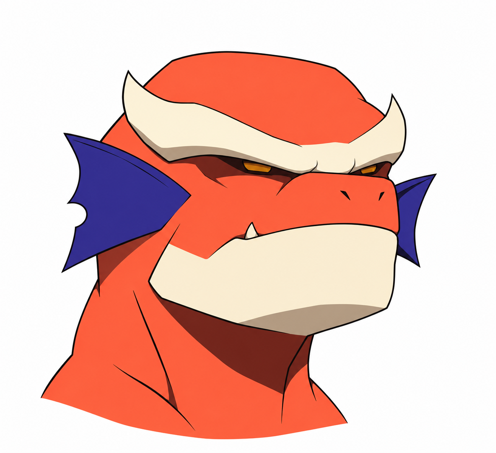
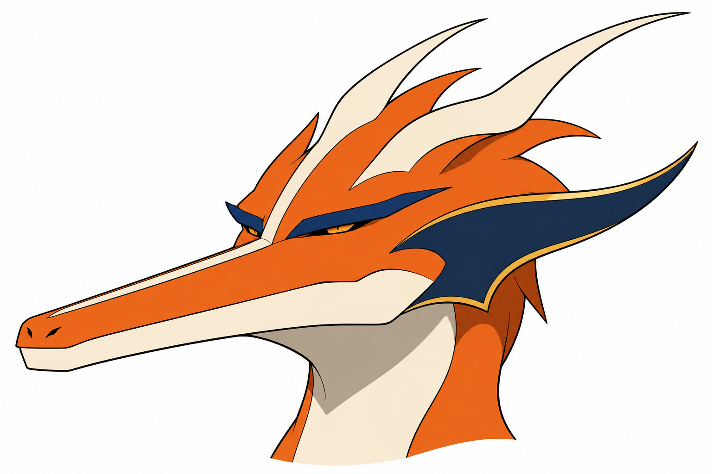
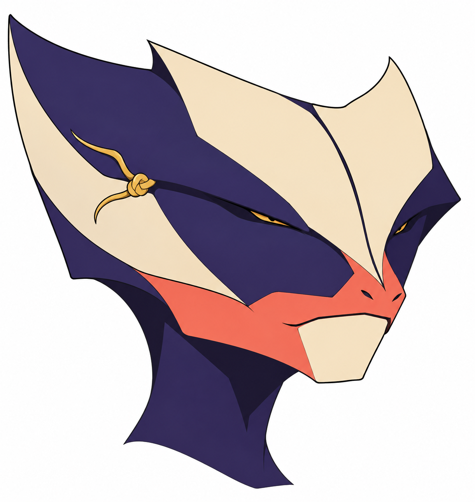

A — Aríete

Crânio curto e largo, mandíbula pesada, olhos mínimos sob arco de testa. As pontas do arco ficaram mais altas que o brief; pode ler como chifre e deve ser decidido. Boa leitura de força sem muita fragmentação.
Estudos de rosto em avaliação, sem escolher corpo ou evolução. B foi desenhada em orientação diferente, mantida sem espelhamento para preservar assimetria. Corpo v4 rejeitado pelo autor.
Comparativo
Crânio curto e largo, mandíbula pesada, olhos mínimos sob arco de testa. As pontas do arco ficaram mais altas que o brief; pode ler como chifre e deve ser decidido. Boa leitura de força sem muita fragmentação.

Focinho longo e baixo, olhos pequenos e faixa lateral com vareta. A geração virou a cabeça para a esquerda e acrescentou cristas longas; não é comparação no mesmo ângulo nem ajuste aprovado. A proporção alongada muda bastante a família e pede corpo correspondente.

Cunha índigo com planos marfim e nó assimétrico, olhos estreitos e mandíbula coral. Melhor integração estrutural de pipa; porém pode ler como elmo. Se escolhido, esclarecer cabeça viva sem face interna removível. Crânio mais largo e pontas maiores que o brief.